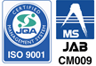
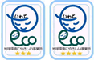

- HOME
- 環境への取り組み
長い年月をかけ、プラスチックをつくる技術力、製造力を育み、お客様と共に高品質の製品を生み出し続けてきた三光化成。プラスチック精密部品を手がける当社の技術は常に、その時代を生きる人たちの暮らしを支えています。
これからもお客様のベストパートナーであるために、当社は社会と地球環境の未来を見つめ、人と自然にやさしい環境づくりに貢献いたします。こちらでは当社が行っている環境への取り組みをご紹介します。
「地球にやさしく、限りある資源を大切に」
――環境方針スローガン
環境基本理念
三光化成グループは、地球環境保全が人類共通の使命であることを認識し企業活動、製品及びサービスの全領域にわたって、地球環境保全との調和に配慮し、人と自然にやさしい環境づくりに貢献します。
2005年10月1日 代表取締役社長 細川 貴志 《ISO-14001》
環境方針
「三光化成グループ 環境基本理念」のもと、プラスチック部品の製造（金型設計・製作から成形・加工・組立まで）の事業活動、製品又はサービスの全領域にわたって環境負荷の低減に努めるため、以下の方針を定めます。
1. 環境関連の法規制および同意した顧客要求事項を遵守するとともに、自主基準を設定し管理する。
2. 環境影響の低減として、省資源・省エネの推進、事業活動の主要な環境負荷である廃プラスチックス・電気使用量の削減を行い、環境パフォーマンスの継続的改善を推進し、環境目標の達成に努める。
3. 事業活動で使用する成形材料・梱包資材等は、環境に考慮した「グリーン調達」に取り組むとともに、環境にやさしい技術、設備導入・活用など環境配慮に努め、環境汚染防止を図る。
4. 当社の環境保全活動に対し、従事するすべての人に教育、周知するとともにその活動を通じて、地域・社会に貢献する。
5. この環境方針は、文書化した情報として維持し、組織に伝達および周知すると共に、社外に公表する。
2017年9月1日 改定
代表取締役社長
細川 貴志
ISO14001認証取得内容
| 三光化成株式会社国内事業部 | |
|---|---|
 |
|
| 認証番号 | JQA－EM6032 |
| 取得日 | 2008年1月18日 |
| 認証機関 | 財団法人日本品質保証機構 |
| 登録範囲 | プラスチックの射出成形品の製造 （受注製品の金型設計、製作、及び成形、組立、加工、且つ製造委託の管理） （受注製品の金型設計、製作、及び成形、組立、加工、且つ製造委託の管理） |
| 三光化成株式会社 福島工場 | 福島県二本松市舟形石山3 |
| 三光化成株式会社 多治見工場 | 岐阜県多治見市東町3-1-16 |
| 三光化成株式会社 広島工場 | 広島県三原市沼田西町惣定247番地95 |
| 三光化成株式会社 一関工場 | 岩手県一関市赤荻字鬼吉13-2 |
| 三光化成株式会社 一関第二工場 | 岩手県一関市赤荻字清水139 |
| 三光化成株式会社 宮城工場 | 宮城県登米市東和町米川字中島215 |
| 三光化成株式会社 弘前工場 | 青森県弘前市大字藤野2-95 |
| 三光化成株式会社 金型工場 | 岩手県一関市真柴字小西43-2 |
| 三光化成株式会社 花泉分工場 | 岩手県一関市花泉町涌津字下三ノ町2 |
| 三光化成塑膠（蘇州）有限公司（中国） | |
|---|---|
| ISO14001：2004 | |
| 認証番号 | CN04/0105 |
| 取得期間 | 2007.1～2010.1 |
| 認証機関 | SGS |
| 認証内容 | プラスチック製品の製造、ロータリートランス、コネクター、カセット、タッチパネルの組立とFPCの後加工。 |
| 三光化成塑膠（大連）有限公司（中国） | |
|---|---|
| ISO-14001 | |
| 認証番号 | 01006E10007ROM |
| 取得日 | 2006.1.24 |
| 認証機関 | 東北認証有限公司 |
| 認証内容 | 事務機器、音響、映像機器、車載用プラスチック射出成形品の製造 |
各事業所の活動実績
| いわて地球環境にやさしい事業所 |
|---|
 |
| 三光化成株式会社一関工場 2009.4.14 [ランク四つ星] |
| 三光化成株式会社一関第二工場2012.12 [ランク四つ星] |
| 地球にやさしい青森県推進事業所 |
|---|
| 三光化成株式会社弘前工場 |
| 東北経済産業局長賞 |
| 三光化成株式会社一関工場 H16年度 |
| 東北七県電力活用推進委員長表彰 |
| 三光化成株式会社福島工場 H17年度 |